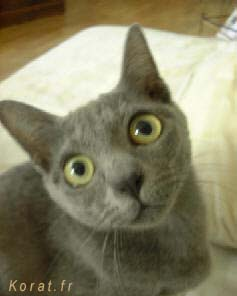

Korat et Allergies
La fourrure du Korat est courte, fine et de couleur bleu argenté. Les poils brillants ne se séparent pas lorsqu'on le caresse, ce qui fait du Korat un bon compagnon pour les personnes ayant des allergies.
C'est le seul chat à poils au contact duquel les personnes allergiques peuvent se trouver.

A lire également pour tout savoir sur la race :